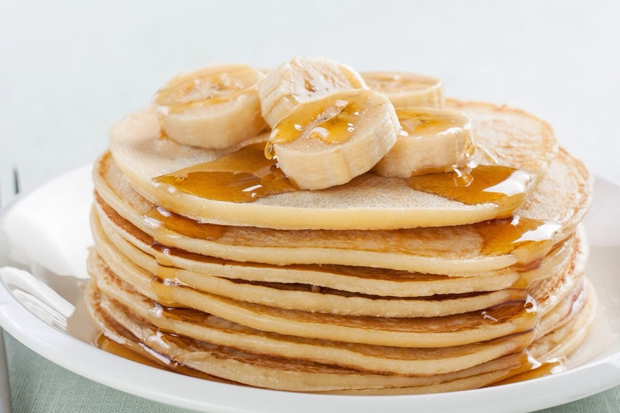

Panqueca Integral de Banana e Aveia

Panqueca saudável e nutritiva de banana e aveia, ideal para o café da manhã.
Ingredientes:
- 2 bananas maduras amassadas
- 1 xícara de aveia em flocos finos
- 1 ovo
- 1 colher de chá de essência de baunilha
- 1/2 xícara de leite (pode ser vegetal)
- 1 colher de chá de canela em pó
- 1/2 colher de chá de fermento em pó
- Mel ou adoçante a gosto (opcional)
Modo de Preparo:
- Em uma tigela, amasse as bananas até formar um purê.
- Adicione o ovo, o leite e a essência de baunilha. Misture bem.
- Acrescente a aveia, a canela, o fermento e o mel (se desejar). Misture até ficar homogêneo.
- Em uma frigideira antiaderente aquecida, coloque uma porção da massa e cozinhe até aparecerem bolhas na superfície.
- Vire a panqueca e cozinhe por mais 1-2 minutos até dourar dos dois lados.
- Sirva as panquecas com frutas frescas, mel ou o que preferir.
Dicas:
- Você pode adicionar nozes ou amêndoas à massa para dar um toque crocante.
- Experimente adicionar uma colher de chia ou linhaça para um toque extra de fibras.